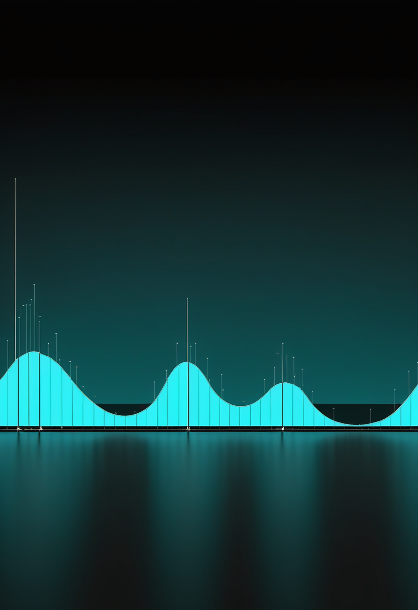
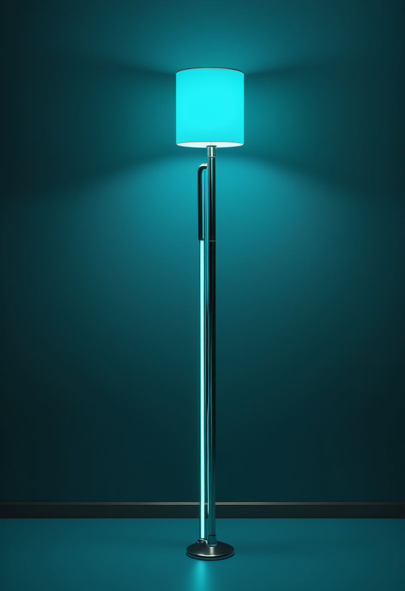

日曜日の便り。ケニア初のエボラ確定例は、治療を求めて訪れた場所そのものが感染の入口だったかもしれないとWHOが指摘した。基盤の章ではこの感染経路の分析とナイジェリア・ボルノ州のコレラ、日本の異例に早いインフルエンザ流行を届ける。自由の章ではPrecision Neuroscienceが公開した中枢神経系の「地図」とUCSFの発話+ジェスチャー同時デコード、Tobiiの経営見直しを。畏敬の章ではウェッブが測定した史上最遠方の高速電波バーストと、今月後半に迫るJAXAのMMXとESAユークリッドの二つの打ち上げ・公開を。美の章ではAIに意識を見るかどうかを分ける言葉の実験と、AIに10分頼るだけで粘り強さが下がる実証研究を取り上げる。命の章では、日本国内で自治体ごとに差が残る新生児スクリーニングと、髄腔内投与ゾルゲンスマの売上動向を伝える。
WHOが10月8日に出した発生情報(Disease Outbreak News)は、ナイロビで死亡したケニア初の確定例について、死亡の約1か月前から体調を崩しており、通常のブンディブギョ型エボラの経過より長いことから、発症当初からの感染ではなく、DRCで「別の病気の治療を求める過程」で医療施設または地域で感染した可能性が高いと指摘した(本人が移動中に症状があったかは「不明」としている)。前号(No.103)で伝えたケニアの接触者追跡は、ドゥアレ保健長官が10月8日、57人を特定(今後も増える見込み)、うち66人がナイロビの国家警察病院で「所在確認済み」と説明したが、57人と66人の数字の関係は会見内でも明確でなく要確認。DRC本体は10月6日時点で確定8,728例・死亡4,205人(致死率48.2%、WHOの同じ発生情報で確認)で、同国史上最大規模のまま。詳細は基盤の章で。
香川県は国の実証事業を活用し、2026年6月1日以降に採血した新生児を対象にSMAとSCID(重症複合免疫不全症)の検査を公費負担とした。前号までに伝えた神奈川県(10月1日開始)に続く例となる。一方、島根県は8月時点でSMAが国の公費対象20疾患に入っておらず、実証事業終了後の国の判断を待つとしている。住む自治体によって新生児が早期発見の機会を得られるかが変わる状況が続く。
2歳以上・抗AAV9抗体陰性のSMA患者を対象とする髄腔内投与のゾルゲンスマ髄注(米国名Itvisma)は、2026年4月3日に日本で承認された(再審査期間6年)。REGENXBIOの開示資料によると、ゾルゲンスマとItvismaを合わせた2026年上半期の売上は6億6,700万ドルで、前年同期の6億2,400万ドルから増加しており、Itvismaの発売が伸びを支えている。
治療の選択肢が増えるほど、「生まれてすぐ見つけられるか」と「どの経路で届けるか」が効果を左右する。住む場所による差は、まだ残っている。
同社は10月8日、12の大学病院で70人の患者から得た脳表面の電気生理記録をもとに、大脳皮質・脳幹・脊髄にわたる中枢神経系のアトラスを公開したと発表した。電極の留置は延べ10万カ所を超え、体性感覚野での指単位の表現、リアルタイムの運動デコード、話し言葉の分類、顔の表情8種類の識別ができたとする。装置は最大1,024チャンネル・電極間隔400マイクロメートルの薄膜アレイで、論文はbioRxivに掲載された査読前のもの。発表時点で植込み患者は100人を超えたという。
Nature Neuroscienceに9月14日付で掲載されたUCSF Chang研究室の論文は、高密度ECoGアレイ1枚から意図した発話と意図したジェスチャーを同時にデコードし、本人に似せたアバターを動かしたと報告した。重度の麻痺がある3人が参加し、うち2人で同時デコードが行われた。扱える語彙は限られ、連続した会話ではなく区切られた文とジェスチャーでの検証にとどまる。
視線入力機器大手のTobii(スウェーデン)は10月6日、8年以上務めた取締役シャルロッタ・ファルヴィン氏の退任を発表した。同時に、進行中の戦略的見直しに助言するためイェスパー・ケルブリンク氏を取締役会のアドバイザーに任命した。見直しの範囲や時期は明らかにされておらず、10月21日の第3四半期決算発表が次の注目点となる。
10月7日付の各社比較(二次情報)によると、販売承認を得ているのは中国Neuracle(NEO)と、欧州で網膜インプラントPRIMAを販売するScience Corp.の2社にとどまる。Synchron・Paradromics・Neuralinkは米国でなお実現可能性試験の段階にあり、Synchronの本格試験(ピボタル試験)の設計公表が次の節目とされる。
データ基盤と耐久性という地味な土台、経営の見直し、承認地図のばらつき。派手な「世界初」より、実用化を支える構造が今週は目立った。視線入力(Tobii等)自身は、技術面の新しい一次情報を取得できなかった。
WHOが10月8日に出した発生情報は、ナイロビで死亡したケニア初の確定例が死亡の約1か月前から体調を崩していたと記し、DRCで「別の病気の治療を求める過程」で医療施設または地域で感染した可能性が高いと指摘した。ケニア保健省のドゥアレ長官は同日、接触者57人を特定(今後も増える見込み)、うち66人がナイロビの国家警察病院で「所在確認済み」と説明したが、57人と66人の関係は発表内でも明確でなく要確認。保健省は「流行ではなく管理下の輸入例」との立場を取っている。
WHOアフリカ地域事務局が10月8日に公表した発表では、ナイジェリア疾病対策センター(NCDC)の集計として、ボルノ州で9月末時点に疑い例68,152件・死亡394人、致命率0.6%が報告された。同州の流行は20年以上で最大規模とされるが、直近は大きく減少しているという。影響を受けた地方行政区(LGA)の数は出典内で「27のうち23」と「22すべて」の二通りの表記があり要確認。

厚生労働省の発表によると、2026年第34週(8月17〜23日)の定点当たり報告数が1.11となり、流行開始の目安(1.00)を超えた。現行の集計方法になった1999年以降で2番目に早い流行入りとなる。第37週(9月7〜13日)は5.54(前週3.29)に増え、埼玉県では第40週(9月28日〜10月4日)も前週より増加が続いている。全国の10月分の最新値は今回確認できず要確認。
CIDRAPのオスターホルム所長によるポッドキャスト(10月8日)は、米CDCが2025年1月以降に職員のほぼ3分の1を失い、麻疹やこの夏の食中毒アウトブレイクへの対応が制約されていると指摘した。米国の麻疹は10月8日時点で確定4,080例(前号既報)。人員減が今後の対応力にどう響くかが注目点となっている。
ケニアでは入口そのものが問われ、ナイジェリアでは規模が最大級に達し、日本では季節がずれ、米国では対応する側の体力が問われている。公衆衛生の負荷は、どこも静かに重くなっている。
南アフリカのMeerKAT望遠鏡が2024年3月4日に捉えた高速電波バーストFRB 20240304Bについて、ジェイムズ・ウェッブ宇宙望遠鏡が母銀河の赤方偏移2.148を測定した。ビッグバンからおよそ30億年後にあたり、従来の記録(赤方偏移約1.016)を倍以上更新した。母銀河は地上最大級の望遠鏡では捉えられない小さな星形成銀河で、研究チーム(筆頭著者はシドニー大学のManisha Caleb氏)は、天体の合体ではなくマグネターが起源である可能性が高いとしている。論文はScience誌に掲載。
JAXAは、火星の衛星フォボスから試料を持ち帰るMMXを、10月20日午前4時41分(日本時間)にH3ロケット10号機で種子島宇宙センターから打ち上げる計画を示している。H3の不具合で当初予定の2024年から延期されていたが、約26カ月ごとにしか来ない火星への打ち上げ機会に合わせる。試料の地球帰還は2031年ごろの見込みで、NASAは10月15日に自らの貢献を紹介する記者会見を開く。
ダークエネルギーとダークマターの謎に迫るESAのユークリッド宇宙望遠鏡が、10月21日に初の本格データ(DR1)を公開する。2024年2月〜2025年5月に観測した広域サーベイ約1,900平方度(全計画の約7分の1)と、ディープフィールド53平方度が対象。画像・スペクトル・天体カタログ・赤方偏移が含まれ、ESAのアーカイブとNASA/IPACのIRSAから公開される。
通常の検診に血液による多がん早期発見検査を上乗せした無作為化試験で、3回の検診を終えた時点のステージIII・IVがんの発生率は、通常の検診のみを受けた群と有意差がなかった。期待の大きい分野での慎重な結果であり、「早く見つかること」が必ずしも「進行を防ぐこと」に直結しない場合があることを示している。
ヘルシンキ大学などは、脳磁図(MEG)でうつ病の患者263人と健康な75人の安静時の脳活動を調べ、脳の領域どうしのつながり方から患者を5つのグループに分けた。つながりが特に強いグループでは物質乱用が、弱いグループでは心的外傷後ストレス症状が目立った。同じ診断でも脳の変化が正反対の場合があり、個別化治療につながる可能性がある(掲載誌は要確認)。
見える距離の記録を伸ばす望遠鏡、2つの打ち上げ・公開を控えた今月後半、そして「早く見つける」ことの限界を示す医学データ。畏敬は、届く範囲と届かない範囲を同時に教えてくれる。
ミュンヘン大学のLouis Longin氏らは、人とAIがまったく同じ反応を示す場面を読ませる実験を計1,092人に対して行い、AIは人よりも有意に「意識が低い」と評価されたと報告した。一方「気づいている」というより中立的な語で尋ねると差はずっと小さくなり、どの言葉で問うかが評価を大きく左右することが示された。論文はCognition誌(DOI 10.1016/j.cognition.2026.106733)、大学の発表は10月2日。

UCバークレーは10月9日、AIに約10分頼っただけで、AIを外したあとの難問への粘り強さと自力での成績が下がるとする研究を発表した。3つのランダム化比較試験(計1,222人、分数の計算とSATの読解)で同じ傾向が出ている。AIを外した後の最後の3問の正答率は、AIを使った群が71%、対照群が77%だった。査読版は言語モデル学会(COLM)で発表され、カーネギーメロン大・MIT・オックスフォード大・UCLAとの共同研究。
IMAGENコホートの課題fMRIデータ(1,050人)から個人ごとの脳デジタルツインを作り、計算機の上で回路に介入してその人に起きる変化を予測する研究がbioRxivに公開された。予測は薬理fMRIのデータと突き合わせて検証されている。査読前のプレプリントであり、臨床で使える段階ではない点には注意がいる。
故人を模したチャットボット(グリーフボット)をめぐり、2026年の論文は、本人が生前に与える同意、作成・利用・削除それぞれの範囲、そして感情的な依存を生まない設計を原則として提案している。別の2026年の研究は、一般の人々がこの技術に何を期待し、どのような統治を求めているかを調べた。技術より先に制度の議論が進んでいる領域で、各国の規制動向は情報源によって記述に差があり要確認。
「心をアップロードできるか」より身近な問いとして、「AIが私たちの考える力や、意識の見え方そのものをどう変えるか」が実証データで語られ始めている。
日曜日の便り。ケニア初のエボラ確定例は、治療を求めた場所そのものが感染の入口だったかもしれないとWHOが指摘し、接触者の数字も更新された。基盤の章ではナイジェリア・ボルノ州の大規模なコレラ流行と、日本の異例に早いインフルエンザ、米CDCの人員減を届けた。自由の章では、Precision Neuroscienceが公開した中枢神経系の「地図」とUCSFの発話・ジェスチャー同時デコード、Tobiiの経営見直しを伝えた。畏敬の章では、ウェッブが測定した史上最遠方の高速電波バーストと、今月後半に迫るJAXA MMX・ESAユークリッドの打ち上げ・公開予定、多がん血液検査の慎重な結果を取り上げた。美の章では、AIに意識を見るかどうかを分ける言葉の実験と、AIに10分頼るだけで粘り強さが下がる実証研究を届けた。命の章では、日本国内で自治体ごとに差が残る新生児スクリーニングと、髄腔内投与ゾルゲンスマの売上動向を伝えた。
では、また明日の朝に。 — JaH